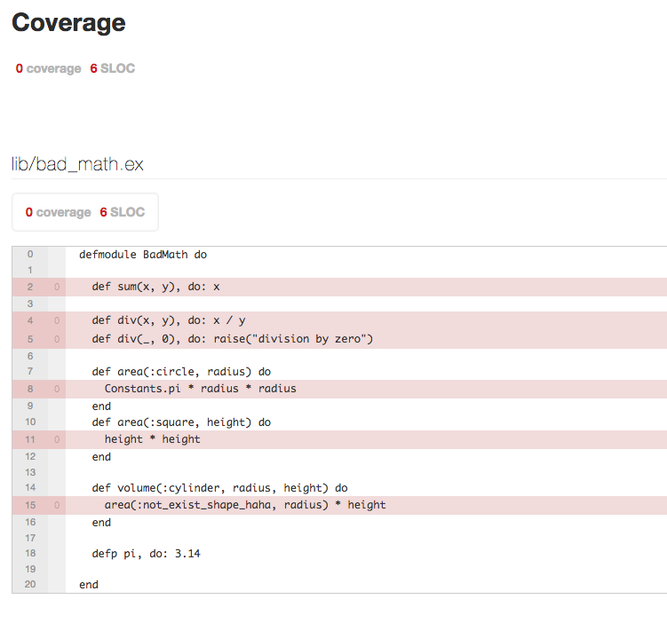

.left-column[ ## BEAM ### - Languages ] .right-column.center[ ``` +---------------------------------------------------------+ | Strong | | | | | | | | Elixir | C# | | Erlang | F# | | Clojure | Java | | Python | Scala | | Ruby | Haskell | | Groovy | | | | | | | | |Dynamic---------------------+----------------------Static| | | | | | | | | | | Perl | | | PHP | C | | VB | C++ | | JavaScript | | | | | | | | | | | | Weak | +---------------------------------------------------------+ ``` ] --- .left-column[ ## BEAM ### - Languages ] .right-column[ <img src="img/armstrong-hipster.jpg" width="88%"> *Erlang started life as a Prolog interpreter and has always had a dynamic type system, and for a long time various heroic attempts have been made to add a type system to Erlang.* [(c) Joe Armstrong](http://webcem01.cem.itesm.mx:8005/erlang/cd/downloads/hopl_erlang.pdf) ] --- name: beam-langs .left-column[ ## BEAM ### - Languages ] .right-column[ - erlang (1985) strong / dynamic types - elixir (2011) strong / dynamic types - [other 20+](https://github.com/llaisdy/beam_languages) dead or alive **dynamic** typed languages ] --- template: beam-langs .right-column.center[ ##### Dynamic typing is ... ] --- template: beam-langs .right-column.center[ ##### Dynamic typing is pain ] --- .left-column[ ## BEAM ### - Languages ### - Static-Typed ] .right-column.center[ ##### Radical solution - choose other language <img src="img/elm-logo.png" width="50%"> ] --- .left-column[ ## BEAM ### - Languages ### - Static-Typed ### - Elchemy ] .right-column[ #### [elchemy](https://wende.github.io/elchemy/) (elixir way) - founded by [wende](https://github.com/wende) - since 2017 #### advantages - subset of elm (haskell) - Hindley–Milner type system (type inference etc) - generates readable elixir source code #### disadvantages - language is pretty raw (no OTP goodies etc) - maintained by only one person - haskell-like currying in [generated code](https://wende.github.io/elchemy-ivy/calling-elchemy.html) - FFI is required for calling Elixir / Erlang code - meta-programming is not supported ] --- .left-column[ ## BEAM ### - Languages ### - Static-Typed ### - Elchemy ### - Alpaca ] .right-column[ #### [alpaca](https://github.com/alpaca-lang) (erlang way) - since 2016 - syntax somewhere between OCaml and Elm #### advantages - Hindley–Milner type system - type inferencer with ADTs - erlang-like pattern matching - maintained by [**Askuity Inc**](http://www.erlang-factory.com/sfbay2017/jeremy-pierre.html) company - **typed messages** (!) #### disadvantages - language is pretty raw (no OTP goodies etc) - FFI is required for calling Elixir / Erlang code - meta-programming is not supported ] --- .left-column[ ## Elixir ] .right-column.center[ ##### If language don't care about something - developer do this work manually. ] --- .left-column[ ## Elixir ] .right-column.center[ ##### If language don't care about something - developer do this work manually. <img src="img/rules-meme.jpg" width="70%"> ] --- .left-column[ ## Elixir ] .right-column.center[ ##### If language don't care about something - developer do this work manually. <img src="img/rules-meme.jpg" width="70%"> #### yes ] --- .left-column[ ## Elixir ### - Mix ] .right-column[ - always use [mix utility](http://elixir-lang.github.io/getting-started/mix-otp/introduction-to-mix.html) - mix generates project skeletons - mix is your package manager - mix is your compiler - mix is your tool to run tasks - interact with elixir code only using mix - probably if you need something, mix has task for it - write custom mix tasks if you need more ```bash mix new foo --sup cd ./foo mix deps.get mix compile mix test iex -S mix ``` ] --- .left-column[ ## Elixir ### - Mix ### - Project ] .right-column[ - strict structure of project - all **not** elixir stuff (assets etc) in `./priv/` dir - to access `./priv/` dir use [:code.priv_dir](http://erlang.org/doc/man/code.html#priv_dir-1) function Please **not work with paths directly**, relative nodejs-like paths will not work in some cases. ```bash . ├── README.md ├── _build <<< BEAM files bytecode ├── config <<< ONLY .exs configs │ └── config.exs ├── lib <<< ONLY .ex source │ ├── foo │ │ └── application.ex │ └── foo.ex ├── mix.exs <<< main .exs config (deps etc) ├── mix.lock <<< never edit it manually !!! ├── priv <<< all NOT elixir files here └── test <<< ONLY .exs tests ├── foo_test.exs └── test_helper.exs ``` ] --- .left-column[ ## Elixir ### - Mix ### - Project ### - Compiler ] .right-column[ - **NEVER** ignore compiler warnings (except deps) - it's better to use `--warnings-as-errors` compiler flag ```ruby defmodule BadMath do def sum(x, y), do: x def div(x, y), do: x / y def div(_, 0), do: raise("division by zero") def area(:circle, radius) do Constants.pi * radius * radius end defp pi, do: 3.14 end ``` ```bash warning: function pi/0 is unused lib/bad_math.ex:12 warning: variable "y" is unused lib/bad_math.ex:3 warning: this clause cannot match because a previous clause at line 5 always matches lib/bad_math.ex:6 warning: function Constants.pi/0 is undefined (module Constants is not available) lib/bad_math.ex:9 ``` ] --- .left-column[ ## Elixir ### - Mix ### - Project ### - Compiler ### - Dialyzer ] .right-column[ - [Dialyzer](http://erlang.org/doc/man/dialyzer.html) is a static analysis tool - Designed by [HiPE](https://www.it.uu.se/research/group/hipe/) team in 2004 - Unique type inference mechanism - **Not** Hindley-Milner or soft-typing type system ```ruby @pi 3.14 def area(:circle, radius) do @pi * radius * radius end def volume(:cylinder, radius, height) do area(:not_exist_shape_haha, radius) * height end ``` ```bash lib/bad_math.ex:12: Function volume/3 has no local return lib/bad_math.ex:13: The call 'Elixir.BadMath':area( 'not_exist_shape_haha', radius@1::any() ) will never return since it differs in the 1st argument from the success typing arguments: ('circle',number()) ``` ] --- .left-column[ ## Elixir ### - Mix ### - Project ### - Compiler ### - Dialyzer ] .right-column[ #### features - [Dialyxir](https://github.com/jeremyjh/dialyxir) mix task for Dialyzer - `@type` and `@spec` can be provided as documentation #### advantages - Can work **without** any type notations - Great, deep and detailed type inference - Can be applied to **any** BEAM VM based language #### disadvantages - code not 100% typed - new Elixir version always brings some Dialyzer bugs - code analysis is performed **very** slow - random fake errors are appearing from time to time ] --- .left-column[ ## Elixir ### - Mix ### - Project ### - Compiler ### - Dialyzer ### - ExUnit ] .right-column[ - tests decrease pain of dynamic typing (little bit) - tests simplify refactoring - tests are examples of usage of your app / lib - tests is kind of documentation - do not take too literally "let it fail" strategy .center[ <img src="img/erlang-let-it-fail-meme.jpg" width="70%"> ] ] --- .left-column[ ## Elixir ### - Mix ### - Project ### - Compiler ### - Dialyzer ### - ExUnit ] .right-column[ ##### features - usually `./test/` dir structure corresponds to `./lib/` dir - created new module? create new test file for it! - public functions should be tested explicitly - private functions can be tested only implicitly - three phases: setup, exercise, assert - [ExUnit](https://hexdocs.pm/ex_unit/ExUnit.html) macro ```bash mix test ./test/bad_math_test.exs # runs specific test file mix test ./test/bad_math_test.exs:25 # runs specific test in file in line 25 ``` ##### common pitfalls - test file should have only `.exs` extension - test file should have postfix `_test` on its name, example `bab_math_test.exs` - test module name should have postfix `Test`, example `BadMathTest` ] --- .left-column[ ## Elixir ### - Mix ### - Project ### - Compiler ### - Dialyzer ### - ExUnit ### - ExCoveralls ] .right-column[ - [ExCoveralls](https://github.com/parroty/excoveralls) is test coverage metric tool - minimal required test coverage is configurable (100% is recommended) - optional Coveralls service reports ```bash mix coveralls.html # generates `cover.html` report with coverage details ``` .center[  ] ] --- class: center, middle # Thanks [back to index](index.html)